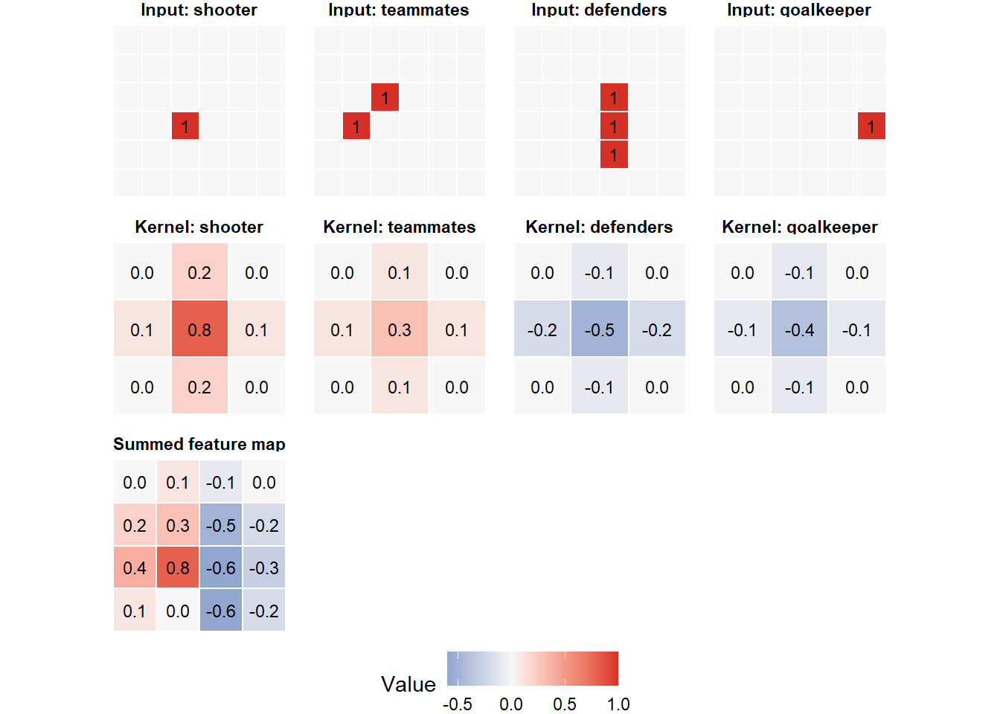
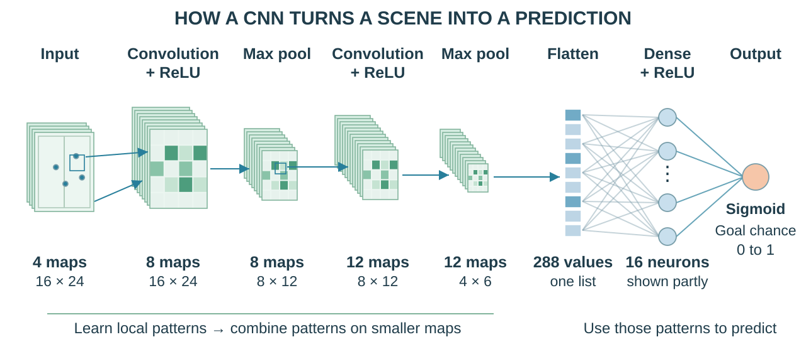
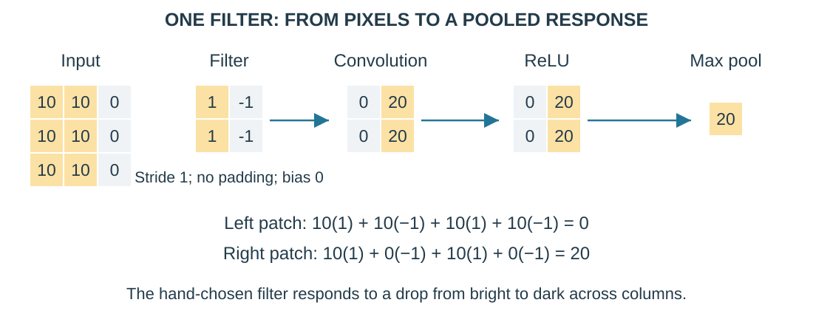

3.4 Convolutional Neural Networks
From MLP neurons to learning patterns on a field grid
1 Learning objectives
After this tutorial, you should be able to:
- connect a CNN filter to the MLP’s weighted-sum neuron;
- represent player locations as aligned grids called channels;
- compute a small two-dimensional convolution;
- calculate a convolutional layer’s output size and parameter count;
- distinguish convolution, activation, and pooling.
2 From an MLP to a CNN
In Tutorial 3.2, an MLP neuron computed a weighted sum, added a bias, and applied an activation. A convolutional neural network (CNN) uses the same ingredients with connections between nearby locations.
2.1 See the whole network first
Read from left to right: convolution finds local patterns, ReLU keeps positive responses, and pooling makes the maps smaller. After repeating these steps, flattening lists the remaining values. Familiar fully connected neurons then combine them into a prediction.

After convolution, each sheet is one feature map, showing where a filter responds. Pooling shrinks each sheet while keeping the number of sheets unchanged. Our input has four player maps and the output is one goal probability; a digit classifier could instead output probabilities for digits 0–9. The sections below unpack each step.
An MLP can read a grid as a list, but each location gets separate weights. A defender pattern learned in one area is not automatically recognized elsewhere.
A CNN changes two things:
- Local connections: each neuron examines a small patch of the grid.
- Shared weights: the same weights are reused across patches.
Think of a filter as a small pattern detector. On an image it might respond to an edge; on our field maps it might respond to nearby players. Early layers find local patterns; later layers combine their responses. Filter weights start randomly and are learned, rather than assigned names such as “defender detector.”
Training still uses forward propagation, binary cross-entropy, backpropagation, and an optimizer, as in Tutorials 3.2–3.3.
3 Represent a sports scene as channels
A grayscale image has one intensity channel; a color image often has red, green, and blue channels. Our channels instead describe player roles. Picture four transparent field maps stacked together. Each map is a channel, with 16 rows and 24 columns:
The four channels are:
- shooter occupancy;
- attacking-teammate occupancy;
- outfield-defender occupancy; and
- defending-goalkeeper occupancy.
The maps line up: the same cell means the same location in every channel. A 1 records that player type there when the shot occurs.
Two same-type players in one cell still give 1. A zero means no player was recorded: the location may be empty or unobserved. A tensor is the array holding these maps. A batch adds a first dimension: means 64 shots.
NoteWhat belongs in a channel?
A channel needs a value at each cell, such as player presence or speed. Match attendance describes the whole match; keep it as a tabular input.
4 The convolution calculation
Recall the MLP’s . A filter (or kernel) is a set of weights that performs this calculation on each local patch:
Here is a patch value and its weight. Multiply matching values, sum, and add the bias. A patch across four channels has values. Sliding the filter produces a grid of responses: one feature map, or output channel.
Keep the terms distinct: the kernel/filter holds learned weights; a patch is the small input region it reads; the feature map holds its calculated responses. With several input channels, a filter has one weight slice per channel and combines them into one map. ReLU then turns negative responses into zero.
4.1 Visualize a multichannel kernel
Read downward: four input maps, four sets of weights, then one output map. One filter combines all four channels at each position. Eight filters produce eight output maps.
These hand-chosen weights add to or subtract from the response. During training, backpropagation finds their gradients and the optimizer updates them. A shared weight’s gradient adds contributions from every position where it is used.
5 A numerical example
Start with one channel to see the arithmetic. The input is
and the filter is
Place the filter over the upper-left patch. With bias zero, multiply matching entries and add:
Move one cell right: . The weights stay the same; the patch changes. R torch repeats this wherever the filter fits:
input_matrix <- matrix(
c(
1, 1, 0, 0,
0, 1, 1, 0,
0, 0, 1, 1,
0, 0, 0, 1
),
nrow = 4,
byrow = TRUE
)
kernel_matrix <- matrix(
c(1, 0, 0, 1),
nrow = 2,
byrow = TRUE
)
# Convert the R matrix; add channel and batch axes: 1 x 1 x 4 x 4.
input_tensor <- torch_tensor(input_matrix)$unsqueeze(1)$unsqueeze(1)
# Filter shape: output channels x input channels x height x width.
kernel_tensor <- torch_tensor(kernel_matrix)$unsqueeze(1)$unsqueeze(1)
# nnf_conv2d applies the weights supplied here (stride 1, no padding).
convolution_output <- nnf_conv2d(
input_tensor,
kernel_tensor
)
# Return to R; select shot 1 and output channel 1 to display its map.
as_array(convolution_output)[1, 1, , ] [,1] [,2] [,3]
[1,] 2 2 0
[2,] 0 2 2
[3,] 0 0 2The output is : a filter fits at three positions horizontally and vertically in this input:
With four channels, repeat this calculation in each aligned patch, sum the four results, then add one bias.
nnf_conv2d(input, weight) performs a calculation with supplied weights. In contrast, nn_conv2d(4, 8, 3, padding = 1) creates a layer with eight trainable filters, each spanning four input channels. Calling that layer on a tensor uses its stored weights.
6 Output dimensions
Two choices control the output size:
- Stride : how many cells the filter moves each step.
- Padding : how many zero-valued cells are added on each edge so the filter can cover boundary locations.
For input height and a square filter of width (with no gaps between its weights),
Use the same formula for width; means round down. For our filter, stride 1 and padding 1,
Pooling is a separate step. A max pool keeps the largest value in each patch. With stride 2, it halves height and width, leaving the channel count unchanged. It has no learned weights and loses some location detail.
6.1 See convolution, ReLU, and pooling together
This small image example uses a hand-chosen edge filter. The left patch is uniformly bright; the right patch changes from 10 to 0. Convolution responds to that change. ReLU keeps these nonnegative responses, and pooling keeps their maximum:

# Two rows of the response map shown above, as an ordinary R matrix.
response <- matrix(c(0, 20, 0, 20), nrow = 2, byrow = TRUE)
z <- torch_tensor(response)$unsqueeze(1)$unsqueeze(1) # 1 x 1 x 2 x 2
activated <- nnf_relu(z) # Set negative values to zero
pooled <- nnf_max_pool2d(activated, 2) # Largest value in each 2 x 2 patch
pooled$item() # One remaining value: 20[1] 20If a response were negative, ReLU would replace it with zero. In a trained CNN, backpropagation learns the filter weights; the ReLU and max-pool rules stay fixed.
7 Parameter count
Count weights just as for the MLP. Each filter needs one weight per patch value, plus one bias. For input channels and filters,
is the parameter count; are the filter’s height and width.
Our first layer has 4 input channels and 8 filters. Each filter has weights and one bias:
The same 296 parameters are reused at every location; a larger field grid does not add filter weights.
TipCheckpoint: channels, filters, and cells
Use 64 shots, 4 input channels, 8 filters, kernels, padding 1, stride 1, and a grid.
- What is the output tensor shape before pooling?
- Does one output map use one player channel or all four?
- What happens to the convolution’s parameter count if height and width double?
Check your reasoning
The shape is . Each map combines all four channels. Shared weights keep the count at 296. Doubling height and width quadruples the output values, not the parameters.
8 The complete CNN architecture
Convolution calculates weighted sums; ReLU, from Tutorial 3.2, sets negative responses to zero; pooling shrinks the maps. Repeating these steps combines patterns. Flattening then turns the maps into a list for dense layers.

| Stage | Output shape for one shot | Purpose |
|---|---|---|
| Input | Four player-location maps | |
| Conv 1 + ReLU | Learn eight local pattern detectors | |
| Max pool | Halve height and width | |
| Conv 2 + ReLU | Combine the eight learned maps | |
| Max pool | Halve height and width again | |
| Flatten | List all values | |
| Dense + output | Use 16 hidden neurons, then one goal logit |
As in the MLP, sigmoid converts the logit into a goal probability; training uses the logits-based loss. Tutorial 3.5 trains this model on a CPU.
NoteInspect the model in R
cnn <- cnn_module(number_of_channels = 4)
cnnAn `nn_module` containing 5,813 parameters.
-- Modules ---------------------------------------------------------------------
* features: <nn_sequential> #1,172 parameters
* classifier: <nn_sequential> #4,641 parameterscount_parameters(cnn)[1] 58138.1 How much of the field can a unit see?
A unit’s receptive field is the input region affecting its value. The first convolution sees a patch. Later layers combine neighboring responses; after the second pool, one value depends on a region, including padding near edges.
Pooling loses detail, but does not erase position. The flattened list’s fixed order lets the dense layer distinguish patterns near goal from those farther away. Filters recognize local arrangements; the dense layer can use their locations.
9 What a learned filter might represent
The filters receive no labels naming specific patterns. They may learn to respond to:
- defenders clustered around a shooter;
- a goalkeeper close to a shooter; or
- teammates near a shooter.
These are possible interpretations, not guaranteed meanings. Tutorial 3.6 investigates learned patterns; they do not establish causes of scoring.
10 Practice
- What shape does a batch of 64 shots have in this lecture?
- A layer has 8 input channels, 12 output channels, and filters. How many parameters does it have, including biases?
- A input passes through max pooling with stride 2. What is the output size?
- How does a filter resemble an MLP neuron, and what changes in a CNN?
TipShow answers
- , using batch, channel, height, and width order.
- parameters.
- .
- Both compute a weighted sum plus bias, followed here by ReLU. A filter uses local patches and shared weights, learned through backpropagation and optimizer updates.
11 Key takeaways
- A CNN uses familiar neurons with local connections and shared weights.
- One filter reads all input channels and produces one feature map.
- ReLU adds nonlinearity; pooling reduces spatial detail without learned weights.
- The final dense layers and training process connect directly to the MLP.